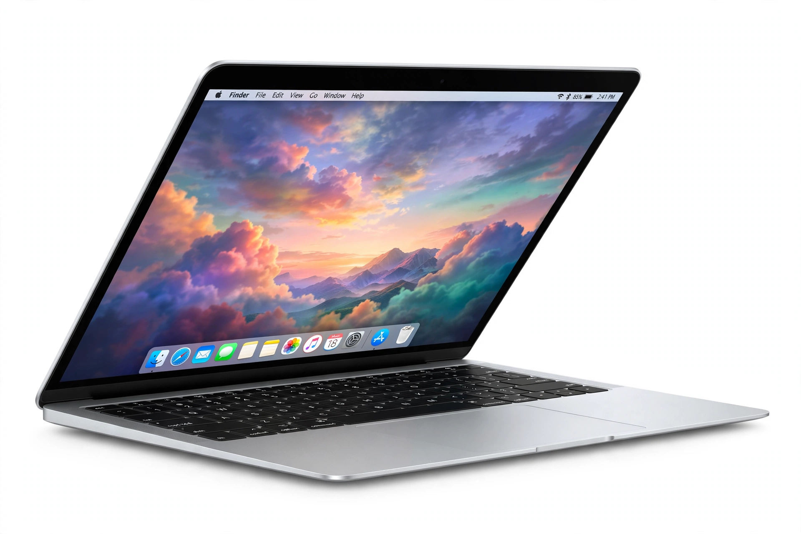

[Image: MacBook hero product shot on a clean background]
Laptops
MacBook Air (13- and 15-inch, the world's most popular laptop in Apple's telling) and MacBook Pro (14- and 16-inch, Pro/Max chips, ProMotion displays) lead the page.
Desktops
iMac with its all-in-one colours, the tiny Mac mini (redesigned smaller around the M4 generation, as recalled), Mac Studio for pros, and Mac Pro at the top.